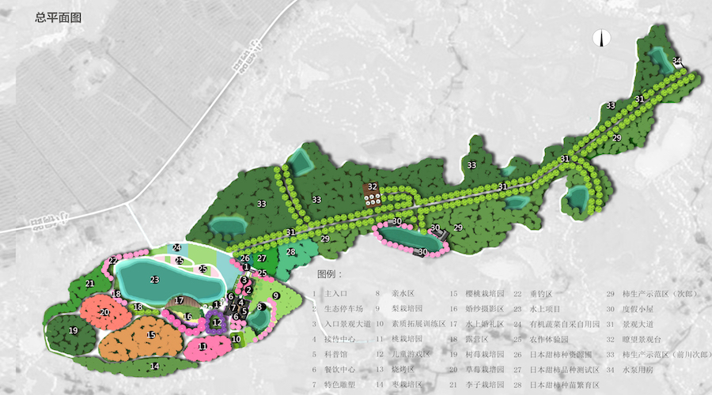
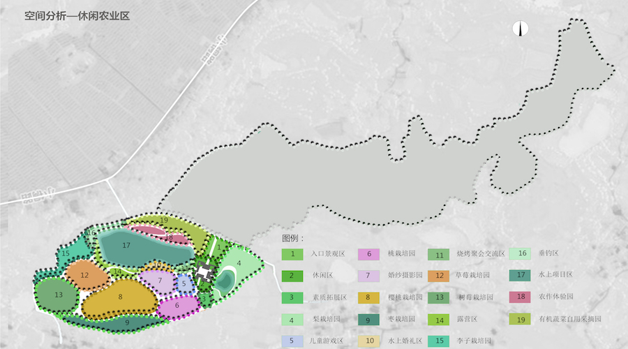
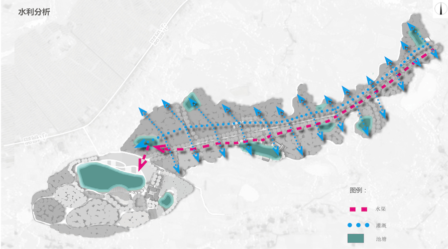

项目位于四川省江油市小溪坝镇五里村，距江油市29公里，规划总面积368亩，交通便利。项目以发展现代化农业产业，实现生态效益、经济效益和社会效益最大化为目标，以企业化经营、品牌化运作、规模化生产为支撑，以发展甜柿为主导产业，休闲观光旅游业为补充，建立具有特色的现代农业产业园,通过多元手段，促进企业良性发展，带动当地农民就业致富。
产业园被规划为“一园一区”。“一园”：甜柿生态园，规划面积231亩，主要包括种质资源圃、品种测试区、种苗繁育区、甜柿丰产栽培区；“一区”：休闲农业区，规划面积137亩，主要包括时鲜果蔬采摘、农业体验、户外休闲、餐饮等。
  